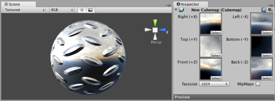

Cubemap Texture
A Cubemap Texture is a collection of six separate square Textures that are put onto the faces of an imaginary cube. Most often they are used to display infinitely faraway reflections on objects, similar to how Skybox displays faraway scenery in the background. The Reflective built-in shaders in Unity use Cubemaps to display reflection.

A mountain scene Cubemap displayed as a reflection on this sphere
A mountain scene Cubemap displayed as a reflection on this sphere
You create Cubemap in one of several ways:
- Use , set its properties, and drag six Texture assets onto corresponding Cubemap "faces".
- Use the Texture Import Settings to create a Cubemap from a single imported texture asset.
- Render your scene into a cubemap from script. Code example in Camera.RenderToCubemap page contains a script for rendering cubemaps straight from the editor.
Properties
| Right (+X) | Texture for the right global side of the Cubemap face. |
| Left (-X) | Texture for the up global side of the Cubemap face. |
| Top (+Y) | Texture for the top global side of the Cubemap face. |
| Bottom (-Y) | Texture for the bottom global side of the Cubemap face. |
| Front (+Z) | Texture for the forward global side of the Cubemap face. |
| Back (-Z) | Texture for the rear global side of the Cubemap face. |
| Face Size | Width and Height in pixels across each individual Cubemap face. Textures will be internally scaled to fit this size, there is no need to manually scale the assets. |
| Mipmap | Enable to create mipmaps. |
| Format | Format of the created cubemap. |